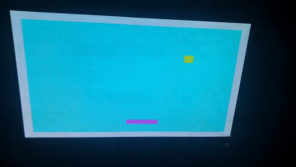
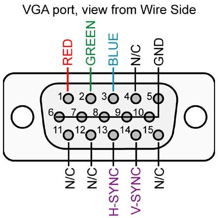
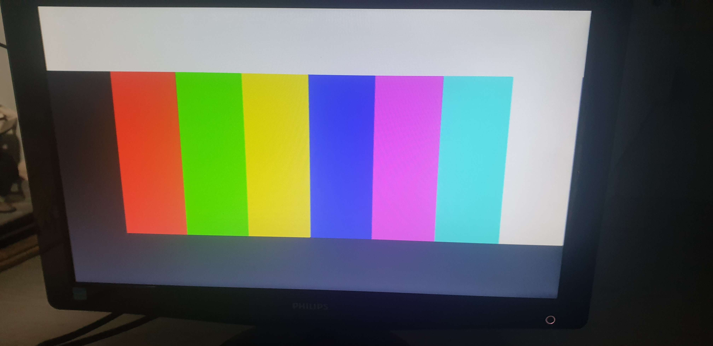

Hi! I am Irfan, an electrical-electronics engineering student studying at Marmara University, Istanbul. Currently I am in Poland, studying at Poznan University of Technology through Erasmus programme.
This is my portfolio website to show my projects.
Contact: irfanyucesann@gmail.com
Education
Marmara University - Electrical-Electronics Engineering | 2020-Current
Poznan University of Technology - Automation Control and Robotics Engineering | 2023-Current
Internships
KONE Elevators and Escalators - Project Engineering Intern | 07.2023-09.2023
Projects
Pong Game in Verilog on VGA display on FPGA

This was my final project for my Digital Design course.
The game is a simple Pong game where the user can move the paddle through the buttons on the FPGA board.
There is a VGA Pmod to make life easier but I did not want to pay for the module so instead I just made the VGA connections myself according to the schematic below
So we have 3 color signals, 1 horizontal sync signal, 1 vertical sync signal and the rest are either not connected or just connected to ground voltage.
Now for the detailed explanation on how the code works
To drive a display on the monitor there are 2 signals. VSync (vertical sync) and the Hsync (horizontal sync). My monitor works on 60Hz Vsync so we need to make the clock calculations according to that. To drive a VGA Signal 640 x 480 @ 60 Hz we need to have a 25MHz pixel frequency. And since my FPGA board (CMOD A7-35T) has a 12MHz input clock, I had to use Vivado's Clocking Wizard IP and since I am using a 640x480 resolution I made the active area between those pixels. Here is the code for the VSync and HSync:
module vhsync(
input clk,
output hsync,
output vsync,
output reg ActiveArea,
output reg [9:0] CounterX,
output reg [9:0] CounterY);
//////////////////////////////////////////////////
clk_wiz_0 instance_name
(
// Clock out ports
.CLK_24MHZ(CLK_24MHZ), // output CLK_24MHZ
// Status and control signals
.reset(reset), // input reset
.locked(locked), // output locked
// Clock in ports
.clk_in1(clk) // input clk_in1
);
//////////////////////////////////////////////////
reg vga_HS, vga_VS;
always @(posedge CLK_24MHZ)begin
CounterX <= CounterX + 1;
if(CounterX==800)begin
CounterX <= 0;
CounterY <= CounterY + 1;
if(CounterY==525)begin
CounterY<=0;
end
end
end
always @(posedge CLK_24MHZ)
begin
vga_HS <= ((CounterX > (640+16)) && (CounterX<(640+16+96)));
vga_VS <= ((CounterY > (480+10)) && (CounterY<(480+10+2)));
ActiveArea <= (CounterX<640) && (CounterY<480);
end
assign hsync = ~vga_HS;
assign vsync = ~vga_VS;
endmodule
After managing to drive the display successfully, I needed to create the game (wow).
First I decided to use only 3 color bits -one for red, one for green and one for blue - since I do not have the PMod I needed to connect them so I didnt bother - but you can also use more by changing the number of color bits.
There are 3 parts on this game - the ball, the paddle and the walls. We can create the wall easily - I made it 25px thick but you can also change it in the code - by setting it up in the counters for X and Y.
The next part is the ball. The ball will start at the top left corner and move towards bottom right. We can set the size,the speed, the color and the shape -you need to use ROM- of the ball. But first we need to change its speed in the opposite direction whenever it hits the wall or the paddle. For this part we need to say that if the right side of the square ball hits the wall, then we should change the speed. I did that part one by one for all the scenarios and it turned out fine.
The paddle part is much easier, we create it on the left side on the screen and give it a height from the ground and a thickness and length so it can be used as different difficulty settings if made further improvements. Also we can change the speed of the paddle by changing the parameter in the code. Here is the code:
`timescale 1ns / 1ps
module vgaimage(
input clk,
input btn1,
input btn2,
output vsync,
output hsync,
output reg red,
output reg green,
output reg blue);
parameter POS_SQUARE_SPEED = 3;
parameter NEG_SQUARE_SPEED = -3;
parameter SIZE_OF_BALL = 30;
parameter DELAY_COUNTER = 1250000;
parameter PADDLE_TOP = 400;
parameter PADDLE_BOTTOM = 420;
parameter PADDLE_SPEED = 8;
parameter PADDLE_WIDTH = 100;
wire [9:0] CounterX;
wire [9:0] CounterY;
wire ActiveArea;
wire click;
wire [9:0] ballX_L, ballX_R;
wire [9:0] ballY_T, ballY_B;
reg [9:0] ballX_reg;
reg [9:0] ballY_reg;
wire [9:0] ballX_reg_next;
wire [9:0] ballY_reg_next;
reg [9:0] ballX_speed_reg;
reg [9:0] ballY_speed_reg;
reg [9:0] ballX_speed_next;
reg [9:0] ballY_speed_next;
wire ball;
wire [9:0] paddle_r, paddle_l;
reg [9:0] paddleX_reg;
reg [20:0] paddle_counter;
wire paddle_en;
wire paddle;
vhsync syncgen
(
.clk(clk),
.hsync(hsync),
.vsync(vsync),
.ActiveArea(ActiveArea),
.CounterX(CounterX),
.CounterY(CounterY)
);
assign ballX_L = ballX_reg;
assign ballY_T = ballY_reg;
assign ballX_R = ballX_L + SIZE_OF_BALL -1;
assign ballY_B = ballY_T + SIZE_OF_BALL -1;
always @(posedge clk) begin
ballX_reg <= ballX_reg_next;
ballY_reg <= ballY_reg_next;
ballX_speed_reg <= ballX_speed_next;
ballY_speed_reg <= ballY_speed_next;
end
assign click = ((CounterX==1) && (CounterY==1)) ? 1:0;
assign ballX_reg_next = (click) ? (ballX_reg + ballX_speed_reg) : ballX_reg;
assign ballY_reg_next = (click) ? (ballY_reg + ballY_speed_reg) : ballY_reg;
assign ball = (ballX_L < CounterX ) && (CounterX < ballX_R) && (ballY_T < CounterY) && (CounterY < ballY_B);
assign paddle_en = btn1 ^ btn2;
assign paddle_l = paddleX_reg;
assign paddle_r = paddleX_reg + PADDLE_WIDTH -1;
assign paddle = (CounterX < paddle_r) && (paddle_l < CounterX) && (CounterY < PADDLE_BOTTOM) && (PADDLE_TOP < CounterY);
always @(posedge clk ) begin
ballX_speed_next = ballX_speed_reg;
ballY_speed_next = ballY_speed_reg;
if (ballX_L < 25) begin
ballX_speed_next = POS_SQUARE_SPEED;
end
else if (ballX_R > 615) begin
ballX_speed_next = NEG_SQUARE_SPEED;
end
else if (ballY_T < 25) begin
ballY_speed_next = POS_SQUARE_SPEED;
end
else if (ballY_B > 455) begin
ballY_speed_next = NEG_SQUARE_SPEED;
end
else if ((ballY_B < PADDLE_BOTTOM) && (PADDLE_TOP < ballY_B) && (paddle_l < ballX_R) && (ballX_L < paddle_r)) begin
ballY_speed_next = NEG_SQUARE_SPEED;
end
else if ((PADDLE_TOP < ballY_T) && (ballY_T < PADDLE_BOTTOM) && (paddle_l < ballX_R) && (ballX_L < paddle_r)) begin
ballY_speed_next = POS_SQUARE_SPEED;
end
end
always @(posedge clk)begin
if(paddle_en==1'b1) begin
paddle_counter = paddle_counter+1;
if (paddle_counter == DELAY_COUNTER) begin
paddle_counter<=0;
end
end
if ((btn1==1'b1) && (paddle_counter == DELAY_COUNTER)) begin
paddleX_reg = paddleX_reg + PADDLE_SPEED;
end
else if ((btn2==1'b1) && (paddle_counter == DELAY_COUNTER)) begin
paddleX_reg = paddleX_reg - PADDLE_SPEED;
end
end
always @(posedge clk) begin
if((ActiveArea) && (CounterY < 25)) begin
{blue,green,red}<=3'b111;
end
else if((ActiveArea) && (CounterY > 455)) begin
{blue,green,red}<=3'b111;
end
else if ((ActiveArea) && (CounterX < 25)) begin
{blue,green,red}<= 3'b111;
end
else if ((ActiveArea) && (CounterX > 615)) begin
{blue,green,red}<= 3'b111;
end
else if ((ActiveArea) && (ball)) begin
{blue,green,red}<= 3'b011;
end
else if ((ActiveArea) && (paddle)) begin
{blue,green,red}<= 3'b101;
end
else if ((ActiveArea)) begin
{blue,green,red}<= 3'b110;
end
else begin
{blue,green,red}<=3'b000;
end
end
endmodule
I think this was a rather poor explanation but at least you know what can be done to improve or change the game. Thanks for reading
Microblaze on FPGA
Microblaze allows you to turn your FPGA into a microcontroller. You can choose which parts of the FPGA you would like to put into the microcontroller, the LEDs, the buttons, the switches etc..You can choose which parts you would like to use on Vivado. I first created a block design and added 2 buttons, 2 LEDs, an external clock and the UART peripheral. After connecting the peripherals we choose from the file menu [Export Hardware] - which creates an XSA file for us to use on Vitis (to code our microcontroller).
After opening Vitis with the XSA file, there are ready layouts for us to use (Hello World). I put a simple program in which when I press one of the two buttons it says which one of the buttons is pressed.
#include "xparameters.h"
#include "xil_printf.h"
#include "xgpio.h"
#include "xil_types.h"
#include "sleep.h"
#define BTN_ID XPAR_AXI_GPIO_BUTTONS_DEVICE_ID
#define LED_ID XPAR_AXI_GPIO_LED_DEVICE_ID
#define BTN_CHANNEL 1
#define LED_CHANNEL 1
#define BTN_MASK 0b1
#define LED_MASK 0b11
int main() {
XGpio_Config *cfg_ptr;
XGpio led_device, btn_device;
u32 data;
xil_printf("BTN0 has been pressed\r\n");
// Initialize LED Device
cfg_ptr = XGpio_LookupConfig(LED_ID);
XGpio_CfgInitialize(&led_device, cfg_ptr, cfg_ptr->BaseAddress);
// Initialize Button Device
cfg_ptr = XGpio_LookupConfig(BTN_ID);
XGpio_CfgInitialize(&btn_device, cfg_ptr, cfg_ptr->BaseAddress);
// Set Button Tristate
XGpio_SetDataDirection(&btn_device, BTN_CHANNEL, BTN_MASK);
// Set Led Tristate
XGpio_SetDataDirection(&led_device, LED_CHANNEL, 0);
while (1) {
data = XGpio_DiscreteRead(&btn_device, BTN_CHANNEL);
data &= BTN_MASK;
if (data != 0) {
data = LED_MASK;
usleep(150000);
xil_printf("BTN1 has been pressed\r\n");
}
else {
data = 0;
}
XGpio_DiscreteWrite(&led_device, LED_CHANNEL, data);
}
}
VGA Image Testing in Verilog / FPGA
This is an easier version of the pong game since nothing is moving on the screen. Since I was using 3 bits for the colors I showed all 8 colors I could use on the screen. The VSync and HSync is the same as the Pong project but the image code is rather simple so I will put it down:
timescale 1ns / 1ps
module vgaimage(
input clk,
output vsync,
output hsync,
output reg red,
output reg green,
output reg blue);
wire [9:0] CounterX;
wire [8:0] CounterY;
wire ActiveArea;
vhsync syncgen
(
.clk(clk),
.hsync(hsync),
.vsync(vsync),
.ActiveArea(ActiveArea),
.CounterX(CounterX),
.CounterY(CounterY)
);
always @(posedge clk) begin
if((ActiveArea) &&(CounterY<100)) begin // 100 pixel kalýn beyaz blok
{blue,green,red}<=3'b111;
end
else if((ActiveArea) &&(CounterY>380)) begin // 100 pixel kalýn siyah blok
{blue,green,red}<=3'b000;
end
else if ((ActiveArea) &&(CounterX<80)) begin // 3 bit renk inputu toplam 8 renk 640/8
{blue,green,red}<= 3'b000;
end
else if ((ActiveArea) && (CounterX<160)) begin
{blue,green,red}<= 3'b001;
end
else if ((ActiveArea) &&(CounterX<240)) begin
{blue,green,red}<= 3'b010;
end
else if ((ActiveArea) &&(CounterX<320)) begin
{blue,green,red}<= 3'b011;
end
else if ((ActiveArea) &&(CounterX<400)) begin
{blue,green,red}<= 3'b100;
end
else if ((ActiveArea) &&(CounterX<480)) begin
{blue,green,red}<= 3'b101;
end
else if ((ActiveArea) &&(CounterX<560)) begin
{blue,green,red}<= 3'b110;
end
else if ((ActiveArea) &&(CounterX<640)) begin
{blue,green,red}<= 3'b111;
end
else begin
{blue,green,red}<=3'b000;
end
end
endmodule